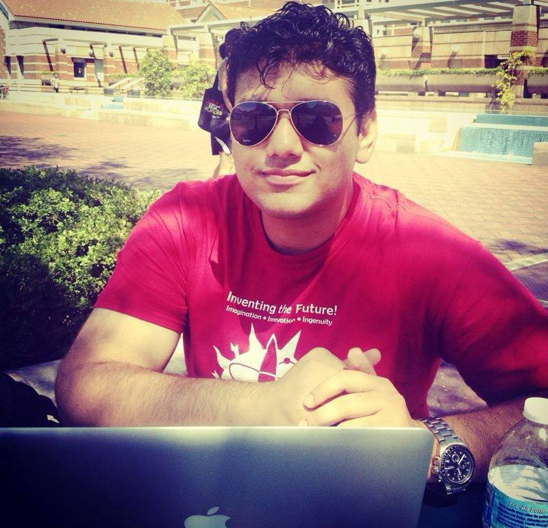

Senior Engineering Manager | Boston, MA
Engineering leader with 11+ years building and scaling AI platforms, enterprise tooling, and high-performing teams. Currently leading 15+ engineers at Wayfair — driving an AI Virtual Assistant that cut follow-on contacts by 45% and a platform that improved developer velocity by 60%.